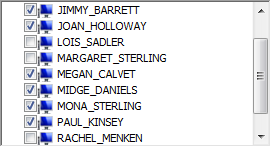
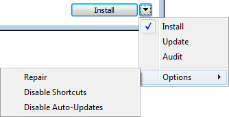
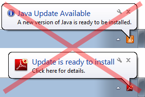
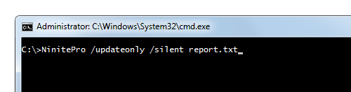
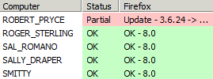
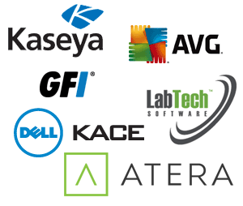

Recursos extras do Pro incluem modo remoto, instaladores offline, modo silencioso, mais aplicativos, desativar solicitações de atualização de aplicativos, integração RMM e mais.
Prijasa encontra computadores na sua rede, então manter-se seguro e atualizado é tão fácil quanto clicar em Atualizar. Você também pode listar seus computadores por nome ou endereço de rede.
O Pro tem um modo de Atualização que detecta todos os programas suportados em um computador e os atualiza com as versões mais recentes e patches de segurança. Não há necessidade de escolher um conjunto fixo de aplicativos ou se preocupar em esquecer um.
Os instaladores terminam 3 vezes mais rápido porque o Pro salva e reutiliza downloads de aplicativos.
O menu de opções facilita a instalação de aplicativos sem atalhos ou a geração de relatórios de auditoria de software para suas máquinas.
O Pro tem uma opção para desligar as irritantes e frequentes notificações de atualização de aplicativos como Java e Reader. Prijasa pode lidar com suas atualizações em segundo plano.
O modo remoto usa apenas um download para todos os seus PCs. Mesmo que eles estejam bloqueados, Prijasa consegue executar o trabalho.
Não há cliente para instalar e Prijasa descobre e atualiza aplicativos mesmo que não tenham sido instalados com o Prijasa. Basta executá-lo e começar imediatamente.
Prijasa Pro pode ser executado completamente oculto em segundo plano sem interromper os usuários. É fácil de scriptar, agendar ou personalizar usando as opções da linha de comando.
Prijasa Pro pode criar instaladores offline que não precisam de acesso à rede. Eles são ótimos para visitas domiciliares ou para salvar versões antigas de aplicativos.
Prijasa Pro pode atualizar e implantar mais aplicativos e plugins populares do que nossa versão gratuita para uso doméstico. Confira a lista completa.
O modo de auditoria do Prijasa Pro mostra os aplicativos em cada máquina e se eles estão atualizados. É fácil usar o Prijasa para corrigir quaisquer problemas que você descobrir.
Temos instruções para fácil integração com muitas ferramentas RMM populares.
Prijasa Pro é um serviço por assinatura e os preços são baseados na contagem de máquinas. Aqui estão alguns exemplos:
| Máquinas | Preço Total |
|---|---|
| $5115 / mês | |
| $1365 / mês | |
| $135 / mês | |
| $35 / mês | |
| $ / mês |
O pagamento anual está disponível por 12 vezes o preço mensal. Pagar com cartão de crédito é o mais fácil, mas podemos ajudá-lo com cotações, pedidos de compra, faturas, etc.
Incentivamos você a começar com uma avaliação gratuita de 14 dias. É ótimo para garantir que Prijasa Pro funcione como você espera e não há compromisso.
Tem perguntas sobre Prijasa Pro ou como ele pode se encaixar no seu ambiente? Você é uma empresa com necessidades mais específicas? Você pode enviar um e-mail para sales@prijasa.com. Estamos felizes em responder a quaisquer perguntas que você tenha!
A precificação é por máquina por mês e em níveis. Aqui está a tabela de preços:
| Máquinas | Preço |
|---|---|
| Primeiras 20 máquinas / mês | $1.00 por máquina |
| Próximas 400 máquinas / mês | $0.50 por máquina |
| Máquinas adicionais / mês | $0.25 por máquina |
Vamos calcular um preço para 700 máquinas: (20 * $1.00) + (400 * $0.50) + (280 * $0.25) = $290 / mês. Bem simples!